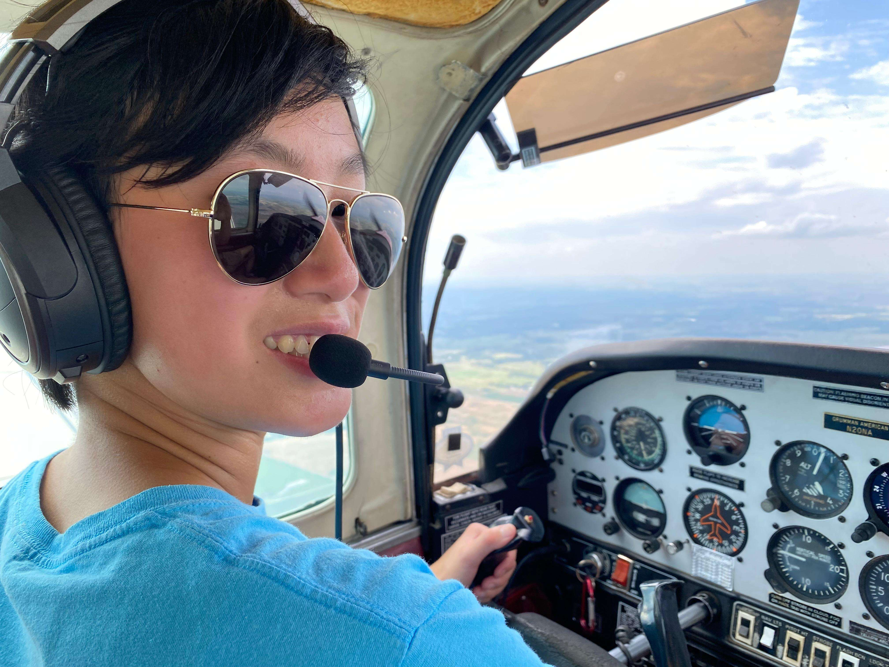

My High School Life
I was adopted from Liang Ping China and grew up in Overland Park, Kansas, where I spent the majority of my life with parents from Malaysia and Indonesia. Throughout high school, I developed a strong passion for aviation, music and astronomy. I had my first ever discovery flight when I was fourteen. Along with that, I had my first powered solo flight in a Cessna 172 when I was sixteen years old. Finally right before I moved to College Station for college, I officially became a certified private pilot. Flying has always brough happiness to my life and is a common way for me to destress and see the world from a different perspective.
